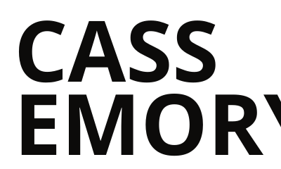

CASS EMORY / Press kit
PRESSKIT.
Public. No form, no password, no email gate. Everything as one ZIP: 212 MB (demo build, not included). Every item is listed individually below.
01 · BIOS
CASS EMORY is an independent hip-hop artist from Houston, Texas, who has released a new song with a video every six weeks since 2024. The records are dense, unhurried and specific about work, family and the drive between places. He owns his masters, shoots with a recurring three-person crew, and sells merch directly.
CASS EMORY is an independent hip-hop artist from Houston, Texas. Since 2024 he has released a new song with a video every four to six weeks rather than waiting on an album cycle, and sells the merch tied to each release directly to the people the videos reach.
His first tape, THE SECOND SHIFT TAPE, was written across a year of night work on the drive between Houston's east side and Baytown. PARKING LOT PROPHET followed in 2025, cut live with a four-piece band in a warehouse over two weekends. The singles since, BAYTOWN BLUE, COLD COFFEE, NIGHT SHIFT ON HARRISBURG and CONCRETE CHOIR, kept the band.
The songs are about labour, family and the specific geography of a city. Everything is independent: the masters, the videos, the shirts and the list.
CASS EMORY makes hip-hop about work. Not about getting out of it, and not about pretending it is glamorous: about the shift itself, the drive to it, the people you see at two in the morning and the ones waiting when you get home. The records are dense, unhurried and conversational, written in scenes and proper nouns, and they are rooted in the geography of Houston in a way that makes them read like a map of the east side.
THE SECOND SHIFT TAPE (2024) was written over a year of night work, most of it on the forty-minute drive between a job on the east side and a house in Baytown. It runs twelve tracks from Clock In to Long Drive Home, and it established the method: write in the car, record fast, put the song out with a video attached.
PARKING LOT PROPHET (2025) brought in a live band. Bassist Lyle Banks, keyboardist Nadia Fontenot, drummer Theo Castille and guitarist Ruben Salas cut the EP with him in a warehouse off Navigation Boulevard over two weekends, and have played on everything since. Production comes from the same small circle: Dre Villanueva, Lyle Banks, Nadia Fontenot and Kemi Adebayo.
Since then he has kept a cadence most artists would not attempt: a new song with a new video every four to six weeks. BAYTOWN BLUE, COLD COFFEE and NIGHT SHIFT ON HARRISBURG each arrived with a video shot in a single day by directors Rome Aguilar, Ines Okonkwo and Sawyer Pike. The current single, CONCRETE CHOIR, was directed by Rome Aguilar on the East End and treats the freeway, the rail yards and the feeder roads as a choir with no conductor.
Every release gets its own page on his site, with the video, the lyrics, the full credits and a small capsule of merch tied to that song, because the first seventy-two hours after a drop are when people buy the shirt. Clean and explicit versions of every single exist and are serviced to DJs and radio.
He is fully independent. He owns his masters, distributes through Eastside Independent Distribution, publishes through Second Shift Songs (ASCAP), and plays headline shows across Texas and the South, with support and festival dates further out.
02 · PHOTOS
Approved for editorial use in connection with coverage of CASS EMORY. The photographer's credit must run with the image. No cropping that removes the credit, no compositing, no commercial use without written permission.
Download: demo build, file not includedPhoto: Dessa Villareal
Download: demo build, file not includedPhoto: Rome Aguilar
Download: demo build, file not includedPhoto: Marquis Odom
Download: demo build, file not includedPhoto: Dessa Villareal
Download: demo build, file not includedPhoto: Marquis Odom
Download: demo build, file not includedPhoto: Rome Aguilar
Build note: photographer and director credits are contractual in most agreements, video crew credits are the most commonly stripped credits in hip-hop, and for a real client every name and licence term is confirmed before launch.
03 · COVER ART
- CONCRETE CHOIR · cover art 3000 × 3000 JPGdemo, not included
- NIGHT SHIFT ON HARRISBURG · cover art 3000 × 3000 JPGdemo, not included
- COLD COFFEE · cover art 3000 × 3000 JPGdemo, not included
- BAYTOWN BLUE · cover art 3000 × 3000 JPGdemo, not included
- PARKING LOT PROPHET · cover art 3000 × 3000 JPGdemo, not included
- THE SECOND SHIFT TAPE · cover art 3000 × 3000 JPGdemo, not included
- CONCRETE CHOIR social crops · 1:1, 4:5, 9:16demo, not included
04 · LOGO




The name is always all caps. The wordmark is always stacked, CASS over EMORY, flush left, with EMORY tracked to the width of CASS. Never recoloured outside ink and bone, never outlined, never re-set in a different face.
05 · VIDEO ASSETS
<iframe src="https://www.youtube-nocookie.com/embed/VIDEO_ID?rel=0" title="CONCRETE CHOIR — CASS EMORY (official video)" width="1280" height="720" allow="encrypted-media; picture-in-picture; fullscreen" loading="lazy"></iframe>
- CONCRETE CHOIR · 9:16 vertical cut · 15 s · silent · 720 × 1280 MP4Download · 792 KB
- CONCRETE CHOIR · still frames · 6 × JPGdemo, not included
The vertical cut is silent and built from licensed stock stand-in stills (Demo stand-in image: Mathias Reding / Pexels; Demo stand-in image: Lukas Rychvalsky / Pexels; Demo stand-in image: Nascimento Vieira / Pexels).
06 · STAGE PLOT
SOLO WITH DJ
| In | Source | Mic / DI |
|---|---|---|
| 1 | CASS vocal | Wireless handheld |
| 2 | Spare vocal | Wireless handheld, on a stand |
| 3–4 | DJ mixer L/R | Stereo DI from 2-channel mixer (2 media players) |
Written out: CASS downstage centre on a wireless handheld with a spare on a stand stage left of him. DJ booth upstage centre with two media players either side of a 2-channel mixer. Two wedges on two mixes: mix 1 downstage centre facing CASS, mix 2 beside the booth for the DJ.
WITH BAND
| In | Source | Mic / DI |
|---|---|---|
| 1–2 | CASS vocal + spare | Wireless handheld ×2 |
| 3–4 | DJ mixer L/R | Stereo DI |
| 5–6 | Keys L/R | DI pair |
| 7 | Bass | DI |
| 8 | Guitar amp | Dynamic instrument mic |
| 9 | Kick | Kick mic |
| 10 | Snare | Dynamic |
| 11 | Hi-hat | Small condenser |
| 12–13 | Overheads L/R | Small condensers |
Written out: Drums upstage centre. DJ booth upstage, stage left of the kit. Keys stage right, bass between keys and centre, guitar amp stage left. CASS downstage centre. Four wedges on three mixes: mix 1 for CASS downstage centre; mix 2 on two wedges, one between keys and bass and one between guitar and the booth; mix 3 for drums at the kit.
- Stage minimum
- Solo with DJ: 4 m × 3 m. With band: 7 m × 5 m.
- Changeover
- Solo with DJ: 10 minutes. With band: 25 minutes.
- Set lengths
- 25 minutes support · 45 minutes headline · 60 minutes headline with band
- Plot PDF
- demo build, not included
07 · ADMIN FACTS
- Artist name
- CASS EMORY (all caps; never Cass Emery, never Kass)
- Status
- Independent. Masters owned by the artist.
- Distributor
- Eastside Independent Distribution
- Publishing
- Second Shift Songs (ASCAP), administered independently
- Versions
- Explicit and clean versions of every single exist. See servicing.
- Band
- Lyle Banks (bass) · Nadia Fontenot (keys) · Theo Castille (drums) · Ruben Salas (guitar)
- Producers
- Dre Villanueva · Lyle Banks · Nadia Fontenot · Kemi Adebayo
- Directors
- Rome Aguilar · Ines Okonkwo · Sawyer Pike
- Photographers
- Dessa Villareal · Rome Aguilar · Marquis Odom
- ISRCs
- Available on request from management
08 · CONTACTS
Management
management@cassemory.demoSync and licensing
sync@cassemory.demoMasters and publishing both controlled independently, so clearance is one conversation and it is usually fast.
Features and verses
features@cassemory.demoSend the record, the budget and the deadline in the first email. All three, or it does not get read.
Beats
Unsolicited beat packs are not opened. Production on the records comes from four people who have worked on everything since 2024. If that changes it will be said here first.
09 · ONE-SHEET
One printable page: photo, 60-word bio, current release, three press quotes, set options, contacts.
One-sheet PDF: demo build, not included.
ILLUSTRATIVE PRESS QUOTES — INVENTED PUBLICATIONS, DEMO CONTENT
“Writes about work the way most people write about love, which is to say constantly and without needing to explain it.”
— Hardpan Quarterly“The videos and the records are clearly made by the same person on the same afternoon, and that is the whole appeal.”
— Second Line Review“Six weeks between songs is a ridiculous pace to keep and he has kept it for two years.”
— The Overpass Review